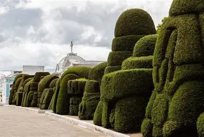
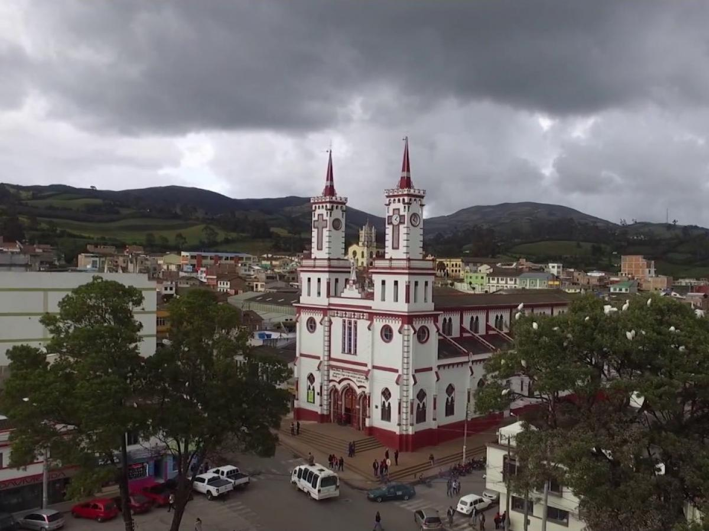
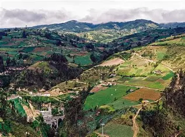
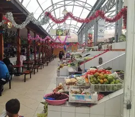
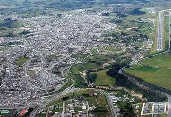
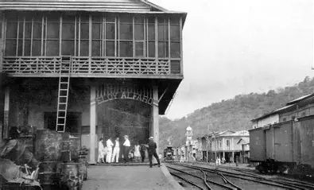

Galería turística de Tulcán, Ecuador

Arte topiario en el Cementerio Municipal, ícono cultural de Tulcán.

Calles de Tulcán con arquitectura tradicional y ambiente fronterizo.

Paisajes andinos que rodean Tulcán, ideales para el ecoturismo.

Mercado típico de Tulcán, lleno de colores, sabores y cultura andina.

Vista panorámica de Tulcán con sus tejados rojos y montañas al fondo.

Estación de tren histórica, símbolo del pasado ferroviario de Tulcán.